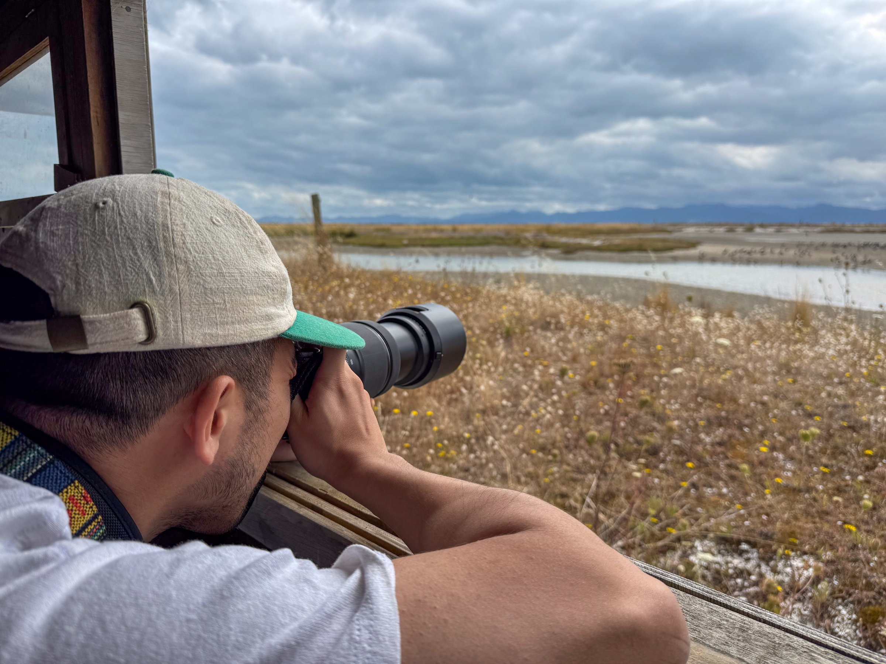

A PRACTICE OF ATTENTION
How to birdwatch
ethically.
A good sighting is never more important than a bird’s safety. This is a small guide to looking with patience, care and respect for the places that make a meeting possible.

Birdwatching begins with a gift: the chance to share a little time with another life. The best encounters rarely come from pushing closer. They arrive when we slow down, notice what a bird is doing, and allow it enough space to go on doing it.
Keep your distance.
Use binoculars, a long lens or simply more time instead of stepping closer. If a bird changes its behaviour because of you—calling, freezing, moving away or leaving a nest—you are too close.
Let birds stay wild.
Do not feed, lure or stage a bird for a photograph. Avoid call playback, especially around breeding birds and sensitive species. Patience makes a better fieldcraft than any shortcut.
Care for the place.
Stay on tracks, follow access guidance and leave habitat as you found it. Take litter home; if it is safe to do so, remove what you find. A photograph is never worth damaged plants, a disturbed shore or a trampled nesting site.
Share sightings thoughtfully.
Some locations need quiet. Avoid posting exact details for nests, roosts, threatened species or places already under pressure. A broad location can still celebrate a sighting without turning it into a crowd.
Make room for others.
Offer knowledge generously and leave room for different ways of learning. A first bird can be just as meaningful as a life-list bird. Curiosity grows best when people feel welcome to ask.
Keep your distance
Watch for the small signals. A bird that stops feeding, shifts its posture, looks repeatedly towards you or changes direction may be telling you something. Move back, lower your presence and let its needs decide the encounter.
Let birds stay wild
Wild birds do not exist for our lists, feeds or portfolios. The pleasure of observing them comes with a responsibility to avoid making their lives harder. Choose the photo you can take without changing the scene.
The goal is not to get closer. It is to become more attentive from where you are.
Care for the place
Birds are never separate from their habitat. Tidal flats, wetlands, forest margins and suburban trees are all living systems with their own rhythms. Learn the local rules, respect mana whenua and follow the guidance of those who care for the site.
Be generous in the field
Ethical birdwatching is also a social practice. Be kind to beginners, share a little of what you know, and respect the knowledge held by local communities and kaitiaki. We build a wider circle of care when people leave feeling curious rather than corrected.
This original guide was informed by the principles in the Birds New Zealand, adapted for the tone and place of Cullen’s Field Notes.